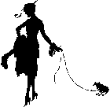

1926—The New-Way Course in Fashionable Clothes-Making
Lesson 16A—Clothes Budget
The Clothes Budget
In every home a certain amount of money is placed aside for the purchase of wearing apparel. Sometimes it is just haphazardly apportioned when an article of clothing is needed. Sometimes a definite sum is set aside each month to meet clothing expenses. But always in every home a certain amount of the general income is expended on things to wear. Let us call this amount the clothes budget, or the clothes allowance.
The woman upon whose shoulders the duty of clothing herself and the children in the home devolves, naturally asks herself how she can obtain the most value for her clothes budget. She wants pretty things to wear herself, and she wants good quality and good style for her children. She wants clothes that are appropriate and suitable—clothes that do justice to her taste and her personality. But it is only by being an intelligent shopper, by knowing how to purchase wisely and well, that she can hope to avoid mistakes that cost her money. It is entirely dependent upon her skill in spending money whether she receives the smallest or the greatest value for the money expended.
To dress well is commendable, and reflects great credit upon the girl or woman who has successfully moulded the dictates of Style to her own requirements. But to dress well on a small income, is even more commendable and the woman who can accomplish this is indeed worthy of all respect and admiration.
But how can one dress well on a small income, you ask? How can one combine good quality and good style with a limited clothes allowance? It is to solve this problem for you, to show you the way to stretch your clothes budget and receive the greatest value for the money expended, that the following pages are written. You will find in these pages valuable shopping hints, culled from the experiences of women who have for many years been vitally interested in the making of clothes at home and the purchasing of materials requisite for the making of these clothes. Through their mistakes you will profit. Through their experiences, you will find the way to make your clothes budget go probably twice as far as it ever did before.
To be able to clothe herself and others well, the woman in the home must have sufficient knowledge of the industries concerned in the manufacture of the materials she uses, to enable her to know exactly what she wants and what is most appropriate. For that reason, there is going to be in this book a special lesson on Textiles from which you will learn important information regarding materials. Materials will be described and their uses tabulated.
But before this important lesson on Textiles, we are going to tell you a little about general buying—not only of materials, but of all the equipment necessary in the construction of clothes. We are going to tell you how to know wool from cotton, and silk from cotton, revealing to you little tests that will enable you to know without the least bit of doubt whether or not you are receiving the material you are paying for. And we are going to tell you all about the care and renovating of clothes, about remodeling, about receiving the longest wear and service from clothes you make at home and the things-to-wear you buy in the shops.
Dressmakers' Terms
Throughout the following lessons, and others to come later, many technical dressmaking terms will be used. As you are going to be an authority on clothes, an expert dressmaker, it is necessary that you know and understand the meaning of all these terms. For that reason we are listing them here for your convenience, and whenever you come upon a word you do not thoroughly understand, turn back to this page and find its meaning here.
 Warp
WarpShopping Notes
Now let us proceed with our notes on shopping. First let us talk about bargains—so dear to the heart of every woman. To buy or not to buy is a question that invariably confronts her when a tempting bargain counter looms into view.
To buy something for which you have no immediate use, even though it does mean the saving of a little money, is not a bargain. Remember that it is very impractical to purchase anything for which you can see no use in the near future. It is a different matter entirely to buy twelve spools of thread instead of one if by so doing you can save a considerable amount—for cotton is a staple article you can use always. But why purchase a two-yard remnant of brocade simply because it is good value for the money—and then place it aside to use "some day"—or perhaps never use it at all?
The woman who relishes a good bargain, should watch the newspapers for announcements of seasonable sales when broken lots, odd sizes and soiled merchandise are offered at sacrifices to make room for new stock. These are legitimate sales, and here she will find true bargains. Suits and coats bought late in the season usually mean a saving of half, and if one is sensible enough to select conventional, tailored styles without any fad features, the coat or suit will be just as smart and attractive the next season. Only those who can afford to buy new clothes very often should indulge in the fads that are offered in the name of fashion, for extreme styles are never as attractive as those that are simple.
To be a skilled, successful shopping always know definitely just what it is you want and need before you start out to purchase it. Do not go on a shopping trip with a hazy, vague idea of what you want to buy. If you do, you will probably waste a great deal of time roaming from one counter to another, finally buying something you do not need and with which you will be heartily disappointed when you return home. Rather, decide definitely before you leave the house just exactly what you want, then go directly to the place where you can obtain it, and insist upon receiving what you ask for. The following pages will teach you enough about materials, fabrics, designs and suitability to enable you to know without uncertainty what is most appropriate and useful for each sewing occasion.
You will find that many fabrics may be purchased cheaper by the bolt or piece than by the yard. If the fabric is one which you will use a great deal, such as sheeting, it is desirable to buy it in the large quantity. But buy it by the yard by all means if you do not intend to use it all within a short time. It is also often more economical to buy double-width materials instead of single-width. The double-width materials can be cut to better advantage and are usually of a slightly better quality.
Do not make the mistake of buying poor material for a dress and expensive trimmings, or expensive material and gaudy trimmings. One will invariably cheapen the other. Always have the trimming and material of the same quality—or buy excellent material and let its fine quality serve the purpose without any trimming whatever. Good taste is evidenced in a careful regard for quality. Style comes later.
Buying Ready-Made Garments
Very often it is necessary to buy ready-made garments. Knitted undergarments for winter, for instance, cannot be made as economically and as well as they can be bought. Overalls, men's shirts, and boys' suits, while they can be made very easily at home, may be bought advantageously ready-made if the duties of the home do not leave a great deal of time for sewing.
Of course, you realize that it always pays to make your own clothes, for you can choose the materials you want, the style you want, and you are certain of good workmanship. If it should become necessary for you to buy a garment you need ready-made—be sure that you consider the following important points:
Material. Always ask yourself if the material is of good quality, if it will wear well, if the color is suitable or will fade very quickly, if the trimmings are attractive and appropriate, or gaudy. Good material should be the prime consideration in purchasing any type of garment ready-made.
Workmanship. Glance at the seams, the hems, the stitching. The little hidden seams and plackets reveal a great deal about the garment you are purchasing. Is the stitching coarse or fine? Does the garment look well-finished? Will the seams pull apart quickly, will the hems ravel, will the buttons or hooks come off? The well-dressed woman never tolerates poor workmanship.
Construction. Particular care should be given to examination of the construction of the garment. You can tell at a glance whether the garment is well or poorly constructed. Is it scant in fullness? If it is, it will not permit freedom of movement and you will not be able to wear it with comfort. Is it badly draped, is the hem uneven, is the lining loose? All these points of construction, perfectly attended to when you make your own clothes at home, are apt to be neglected in ready-to-wear garments. And of course you will find no pleasure in a dress or blouse in which you feel uncomfortable.
Individuality. Even though your dress is ideal in every other detail, it will not be becoming if it does not suit your particular type. Before purchasing a ready-made garment, be sure that the lines are the most appropriate for your figure, that the coloring harmonizes with your own coloring, that the dress or blouse as nearly follows the lines of your figure as possible. And above all, be sure that the garment you buy is exactly appropriate for the occasions for which you need it. Do not purchase an elaborate gown if you need a simple little afternoon frock.
What Shall the Material Be?
You have probably often wondered, when contemplating a new dress, what the material should be? Would a silk dress be practical, or a serge dress? should it be of cotton or wool? The question of selecting an appropriate material for a new Spring or Fall dress is often a puzzling one.
If you are planning a between-season dress, when the weather is rather doubtful, serge is an excellent choice. Choose this material also if you want a serviceable dress to wear underneath a coat. Other woolen materials, such as tricotine, poiret twill, twill cord, etc., should be used for dresses in the late Fall and during the Winter months. Taffeta and satin may be used for "better" dresses for Fall and Winter, but crepe-de-chine and georgette crepe are appropriate only in the warmer months.
Whenever you want a serviceable, wearable, presentable dress for everyday warm-weather wear, choose cotton. There is nothing more practical, nothing more dainty when the dress is well-made. Many of the cotton materials are named and described in the lessons; you have a wide and interesting variety to select from.
Georgette is ideal for a blouse to be worn with your best suit, and fine voile, French lawn or batiste is splendid for wash waists. Use silk for undergarments only when you expect to wear them occasionally under elaborate clothes; but use serviceable lingerie materials for your every-day undergarments. You will find it infinitely more practical and satisfactory.
Woolen Materials
At the beginning of Lesson 17 you will find the interesting stories of wool and cotton and silk, how they are grown, how they are manufactured and for what type of clothes they are most generally used. But now we are going to tell you how to know wool when you buy it, how to know cotton and silk. You will find this information very valuable when you are an expert clothes-maker and buy a great deal of material to transform into pretty things to wear.
In purchasing woolen materials, consider the following five points:
- Is the material all wool?
- Is it new wool or is it shoddy?
- Is the weave close and firm?
- Is the material suitable for the requirements?
- Is the material suitable for the model chosen?
- To be able to answer these questions correctly, you must study the following paragraphs carefully.
Good woolen materials feel alive and elastic in the fingers. Instead of wrinkling when crushed in the hand, they spring back into shape. You can always tell poor woolen material as it crushes very easily and has no elasticity. Shoddy, which is old material or tailors' cuttings worked over, is often added to the new wool to cut down the manufacturer's cost. While this may be all wool and may be legitimately called so, it is not all new wool and will not hold its shape when made into a garment. You can tell wool to which shoddy has been added as it can be easily pulled out of shape and is never well finished.
Cotton is added to wool to make the cost of manufacture less. While this does not very seriously injure the wearing qualities of the material, it is not desirable unless the reduced cost of the material makes up for the difference. If a piece of cloth is ravelled and the warp and woof burned separately, it is possible to prove very quickly if it is all wool or cotton-and-wool. If it is all wool, the threads of both warp and woof will burn slowly and form into little knobs, exuding the odor of burnt feathers. If cotton is present, it will flame and be quickly consumed and have the odor of burnt paper. As cotton-and-wool materials press and tailor poorly, never select this material for tailored garments. Always insist upon all-wool.
If you desire a good quality of wool material, avoid loose woven materials in which the threads can be easily pushed out of place with the finger nail. Such materials will roll or pull at the seams. Another type of material to avoid is the one with heavy thread one way and light thread the other, as it never wears well.
Woolen materials are usually expensive and should be purchased with care. It is always wise to ask for a standard make of woolen, and buy from reliable dealers. If the garment is to be for general wear, the material should be of good, durable quality and the color conservative in tone. The design chosen should be fashionable but not extreme.
Silk Materials
Silk is judged by its texture. The soft, firm silks wear better than those that are stiff—for usually stiff silks are made so by artificial weightings. The process employed by the manufacturer to weight the silk, making up for the loss in weight between the raw silk and the finished product, weakens the silk fibre, stiffens it, and causes it to break or crack after being worn a short while.
When buying silk hold the material up to the light and look through it. If lines show as if the cloth had been cut part way through with a knife, do not accept the material as it will not wear well. The threads of good silk are uniform throughout.
Do not allow silk to lay or hang unused in folds for long periods of time. If silk clothes are hanging in a wardrobe, shake them out occasionally to change the position of the creases and to prevent the silk from breaking. If you are keeping a piece of silk for later use, open and refold it now and then to prevent the breaking along the crease.
Like wool, pure silk is an animal fibre and when burnt gives the odor of burnt feathers. It burns like wool, too, forming into small knobs. If the silk is weighted it will not lose its shape when burned. A small sample of weighted silk will be nearly the same size and shape after burning as before.
The uses of silk are unlimited. Dresses, blouses, underthings, clothes for the children, trimmings for cloth dresses—whenever silk is used it seems to impart a certain touch of distinction to the garment. But to do full justice to the dress or blouse on which you devote a great deal of time and effort, the silk you choose must be of dependable quality. Read the above notes over again carefully and heed them whenever you delve into your clothes budget to purchase silk for a new dress.
Cotton Materials
The wearing qualities of cotton materials may be judged by their weight and texture. To test cotton for strength, tear both with the warp and woof; it should tear easily and the ends of the thread curl up. A plain even weave usually gives good wear for general purposes. If you wish to test the color in the cotton, cut off a small piece and wash it in warm water. Very often cotton shrinks when washed and loses all its newness. Such cotton is very unsatisfactory and should never be used for wearing apparel.
Cotton today is woven into a number of attractive, original designs. Cotton foulards make delightful summer frocks. Crisp organdie is excellent for summer-time dresses also. Flowered voiles and fine dotted swiss make extremely dainty things-to-wear. When you go to the shop to purchase material for your new cotton dress you will be able to select from a wide variety of colors and designs. Abut always watch the quality carefully, and do not let pretty color combinations tempt you into purchasing materials that will look faded and worn after only one laundering.
Linen
As linen is an increasingly popular material, you will probably want to know how to discriminate between the good quality and the poor quality. Linen, you know, crushes very easily and when torn the edge of the threads pull out and make a fringe.
Many cotton materials are finished to appear like linen, but are usually sold under trade names and not as pure linens. Most of these materials are coarser than pure linen. These fiber materials are often filled with starch to give them weight, and they should be particularly avoided as the starch conceals the poor quality of thread beneath.
Try this test with pure linen and with a linen and cotton mixture. Drop a bit of olive oil on a small piece of pure unstarched linen and another drop on a piece of cotton material. You will find that the olive oil on the pure linen leaves a transparent spot, while on the cotton material will be a small opaque spot. If you drop ink on the unstarched linen it will sink immediately and make a round mark, while on cotton the mark is uneven and the ink sinks in very slowly.
When purchasing table linen, it is wiser to select those patterned with small designs rather than those that boast large figures. The small-patterned linen will give much better service. Of course, bleached cotton and linen are very much more desirable because of their whiteness but do not wear as well as the unbleached. Thus, for household purposes buy bleached linen, but for such purposes as covering the ironing boards, for bath towels and pressing cloths, you will find unbleached material very useful.
Extending the Life of Clothes
It is not enough to know how to make pretty clothes, and how to select correct materials for those clothes. One must know also how to so care for one's dresses and blouses that they retain their newness and charm even after a full season's wear. The prettiest blouse, the smartest dress soon loses all its freshness and distinction if it is not cared for properly.
Different types of garments require different care. Different kinds of material need different treatment. It is only through a complete study of renovation and remodeling in all its phases that you can hope to keep your wardrobe in a fine condition.
Remodeling
Of remodeling there is not very much to say. When you find that a dress has become too tight for you, or that its style is no longer the prevalent mode, you can use the material to make a skirt or another dress. But be sure always that the material is in a condition that warrants the time and energy of remodeling into another garment.
Use a small sharp penknife to rip the dress apart. Remove all threads carefully, shake each part well and clean according to the type of material. Then decide on another garment that can be appropriately made from the usable material remaining from the old dress, and determine before you start whether or not you will have enough material. You will find that if you combine another material with that which you already have, you will be able to achieve some splendid effects. A yard of new georgette, for instance, with satin remaining from an old dress will combine quite effectively into a new frock.
There are many excellent dyes on the market that are manufactured for home use. If you have two old garments and the materials harmonize it may be possible to dye them, making the colors harmonize so the two may be combined in one garment. Before trying to use dyes at home learn the result of dyes used over different colors.
But before you can remodel a dress or blouse into something new, you must know exactly how to renovate materials, how to clean them and bring back their newness. Surely you do not want a new dress if the material is going to look old!
Renovating
Renovating means cleaning and refreshing garments to help them retain their newness. Some are washed; some are sponged; some require cleansing fluids. But the object of all methods is to remove dirt and stains and renew as nearly as possible the original lustre or sheen of the material.
There are several kinds of cleansing fluids that may be used to advantage: naphtha, benzine, gasoline and alcohol are among the most widely used. Others, in convenient form, are offered by manufacturers under certain trade names. All the liquids mentioned above are highly explosive and must never be used near a fire or light of any kind. The room in which the fluid is used should be freely ventilated.
Gasoline and benzine always leave an odor in the garment. After cleansing, therefore, the garment should be hung in the open air to allow the fumes to evaporate. But be careful that you do not hang colored materials in the sun, as you will find that they are streaked when dry.
A word about linings: you often find that the lining of a dress becomes soiled and unsightly and you wonder whether or not it would be a good plan to remove and wash it. The materials of which linings are made are usually shrinkable, and after washing the lining becomes soft and out of shape. A dress cannot be properly fitted over a lining of this kind. It is much wiser to remove the soiled lining entirely, and make a new one for the dress. The old lining can be ripped, washed and used in children's clothes.
Sponging and Washing Silks
Old silks can be made to look almost like new again with a little care and attention. Not only can they be washed, refreshed and cleaned, but their original lustre and sheen can be brought to the surface. You may have an old silk dress in your wardrobe right now—a dress that has been forgotten for three or four seasons, but the material of which is still in good condition. Proper renovating will make the material usable again, and with your knowledge of sewing you will soon be able to transform it into something pretty.
Always use a downward stroke when sponging material of any kind, and if possible use a piece of the same material as a wad for the sponging process. Black silk should be sponged on both sides and ironed on the wrong side. You will find that tissue paper placed over the silk while ironing gives splendid results. Similarly, white tissue paper placed over white China or Japanese silk and ironed while damp prevents any change in color and makes the silk lustrous and attractive. Be careful not to have your iron too hot, as it is likely to turn the silk yellow.
Some silks can be washed in soap and water. Do not rub the soap on the material. Dissolve the soap in hot water and add this to the water in which the silk is to be washed. Instead of wringing out silk like other material, just hang it out to drip. Black satin that has been worn a great deal until its surface has become shiny, can be renovated by being dipped into naphtha and hung out in the air to dry. Satin should never be sponged as this destroys the surface of the material and robs it of its lustre.
To take spots out of black or colored silks, use any one of the following methods. Rub the spot well with a lump of magnesia which you can purchase at any drug store. Or separate a visiting card and rub the spot with the soft side of it. The rough or soft side of the card will absorb the grease and it will disappear from the silk. Ammonia takes out grease spots quite rapidly, but we do not recommend its extensive use at it takes the color out of fabrics and destroys the strength of the material. You will find that French chalk, rubbed into the material over a grease spot and allowed to remain twenty-four hours will eradicate the spot successfully. The process may have to be repeated if the spot is a stubborn one.
Renovating Ribbons
When hats are discarded, ribbon trimmings are sometimes discarded with them because the owner does not realize how easily those ribbons can be refreshed and renovated. Ribbons that the young school girl will no longer wear, ribbons that once embellished proud undergarments, ribbons that were used as trimmings on dresses and blouses—all can be cleaned, pressed and made to look almost like new.
Black ribbon, for instance, can be renewed in the same manner as black silk is renewed. It can be kept from wrinkling by being rolled around a bottle until it is partly dry, then taken off and pressed with a moderately hot iron. Place a piece of tissue paper over the ribbon while ironing.
In ironing ribbons use an edge-to-edge motion—not through the center of the ribbon. In this way you receive a smooth, even finish instead of one that is pulled and uneven. You can steam ribbons, if you wish, by placing a wet cloth over a hot iron and running the ribbon quickly over the steaming surface. A piece of cloth or a soft brush may be used to smooth out the creases.
Renewing Woolen Materials
Woolen materials, such as serge, cheviot, tricotine, etc., can be very easily cleaned. Mud or ordinary spots can be quickly removed by brisk rubbing with a whisk broom and then rubbing with a piece of the garment material dampened. Bad stains can be taken out with naphtha or gasoline, and paint stains respond very quickly to benzine. If the surface of silk-warp woolen becomes shiny from wear, it may be almost wholly removed by a sponging of alcohol and water.
Colored woolen fabrics may be washed in warm water to which a teaspoonful of ammonia to a pail of water has been added. The water may be softened with a little borax. Never wring out woolen materials, but hang them on the line to drip or put them through a wringer. Best results are obtained when they are ironed on the wrong side with a fairly warm iron when they are nearly dry.
Utmost care must be exerted in cleansing white woolen goods. Almost all of these fabrics shrink a great deal when washed. Dissolve a cake of pure white soap, cut into shavings in enough hot water to make a lather and add warm water. Now place the woolen garment into these suds instead of rubbing the soap on to it, and knead the garment as you would dough. Never use a washboard. When the woolen garment is entirely white and clean, rinse it thoroughly in warm water and put it through the wringer as smoothly as possible. Place it in a pillow case and hang it on the line until it is nearly dry. Iron on the wrong side with a warm iron.
Never use hot or cold water in washing woolen materials as it will cause them to shrink. Use lukewarm.
How to Dry-Clean
Dry-cleaning is a renovating process that produces admirable results—but do not attempt to dry-clean a garment until you learn the directions given here thoroughly.
To dry-clean white woolens, fill a bowl with hot corn meal or with flour. Rub the garment in it being careful to cover every part of it; then remove and shake the meal or flour off. If the garment is very badly soiled, this process may be repeated. Iron on the wrong side with a slightly warm iron—never use an iron that is hot as it will make the wool yellow. If you find that the garment is still creased, hang it in the open air in the evening and you will find that it regains much of its original newness.
Dainty knit goods, such as baby sacks and worsted shawls, are cleansed by being placed in corn meal and left there for twenty-four hours. You will find that much of the original fluffiness and softness is restored and that the soiled spots have disappeared.
Very often old and cherished linen becomes yellow with age. One may whiten this linen and make it almost as good as new again by boiling it in water to which the juice of lemon has been added. One lemon to one gallon of water.
Removing Stains
If you find that one of your dainty summer frocks, or one of your pretty silk dresses has become stained, try the following method of removing the blemishes. They have been tested and been found satisfactory.
A grass stain on a white woolen skirt can be removed readily with a solution of cream-of-tartar and water. The cream-of-tartar can be purchased at a drug store. Simply rub the spot with this solution until the stain disappears—then hang it in the sun to dry. If you find that the stain does not disappear after a few applications of the solution, allow it to remain on the garment overnight. In similar manner, grass stains can be removed from muslin or other cotton materials by covering the spot with a little molasses and allowing it to remain until the stain fades away. Then the garment should be laundered in the usual manner.
If a drop of sewing machine oil spots your cotton dress or cotton material on which you may be working, the material should be placed at once into cold water and the oil allowed to soak out, or sponge with milk from which all cream has been removed. This will remove the machine oil. Blood stains are also removed by washing the material in cold water—without soap. Clear water quickly removes stains made by sweets and syrups. And you will find that, if taken in time, the most stubborn axle-grease and tar stains will yield to brisk applications of soap, oil or turpentine and water—each one applied individually and in the order named. Use benzine instead of turpentine if the material to be cleaned is woolen.
Caring for Children's Clothes
With fences to be climbed, ball to be played and innumerable ropes to be skipped, children's clothes are constantly in need of attention. Perhaps a button or two snapped off, or a seam rudely tore apart, or a collar jerked out of place. A few deft touches with the needle makes the little garment wearable again—but without these constant rejuvenations the children's clothes become quickly "worn out."
It is important that children be taught early the value of well-kept clothing. It instills in them a fastidiousness which later means a well-dressed woman, a well-dressed man. It teaches them the significance of little careful touches that renew and lengthen the life of their clothes. Above all, it impresses them with a certain respect for clothes—and they begin almost unconsciously to take better care of their things.
A wise plan is to set a certain day of each month aside for the examination of one's own clothes and the clothes of the children in the family. Dark clothes should be carefully brushed. Spotted, soiled clothes should be carefully cleaned. If a button or hook is missing it should be immediately replaced. It is just this careful attention to one's wardrobe that keeps one appearing well-dressed and that by adding to the life and appearance of garments, stretches one's clothes budget quite notably.
In the following lessons you are going to learn about textiles, about the preparation of material for sewing, about patterns and cutting and fitting. And at the end of this book you are going to make a dainty chemise. But as you study these lessons, as you learn how to make attractive things to wear, always remember the significance of materials that are well-bought, of clothes that are well-kept, and of quality surpassing quantity in every respect. There is much valuable information in the pages you have just read—information that you will always be able to use. Refer to it whenever you are in doubt, and if there is any little question of renovating or lengthening the life of clothes, that is still puzzling you, have no hesitancy in writing to us about it. We are here to help you—and we want to help you in every way possible.
Lesson 16A
Questions
- Define or tell briefly what the following are:— (a) Decollete, (b) Epaulet, (c) Eton, (d) Jabot, (e) Mercerize, (f) Motif, (g) Modiste, (h) Warp, (I) Woof, (j) Worsted.
- Why is a seasonable sale often a time of bargains?
- How should the material for a garment and the trimming compare in quality?
- What points should you keep in mind in buying ready-made garments?
- How can you determine if cotton has been added to wool in a piece of material?
- (a) Which is better wearing—soft or stiff silk?
(b) Why? - How should the ends of cotton threads appear when torn?
- Give two simple tests for linen.
- How should any material be sponged?
- What temperature should the water be for washing woolen materials?
Samples of the following should be sent in for inspection in the envelope provided for the purpose. If samples are not correctly done, corrected work will be returned with full explanation. In the case of COMPLETED GARMENTS, the work will be returned to the student for use. Mail your samples with your answers to Quiz Questions and be sure to put name and address and student number on the outside of the envelope.